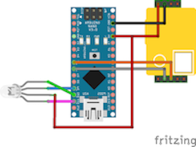

C02 MONITORS
The CO2 Monitors are shaped like icebergs, in which the colour will change from red, to yellow or to green depending on the CO2 level, which is measured in parts per million. The sensors themselves are comprised with an Arduino board, connected to RGB LED, for the changing colour and a MH-Z19B sensor. For use, carefully connect the monitor through a USB interface, and keep it level. For more information, visit Github for the Iceberg Device
Iceberg Monitor
Will change between red, yellow and green to warn user about CO2 levels
CO2 Levels
These are the ranges in which the CO2 levels are safe or not.

Arduino CO2 Monitor
These are the ranges in which the CO2 levels are safe or not.
Connecting MH-Z19B Sensor
Consolidate Arduino CO2 Monitor picture to correctly match up wiring. This corresponds to the sensor for measuring CO2 levels.

Connecting RGB LED
Consolidate Arduino CO2 Monitor picture to correctly match up wiring. This corresponds to the RGB LED that shows you the colour range.
Data from the CO2 Monitors
{{ monitor.name }}
{{ monitor.name }}
{{ monitor.name }}
CO2 PPM Reading: {{ monitor.ppm }}
Temperature: {{ monitor.temp }}
Time: {{ monitor.pTime }}